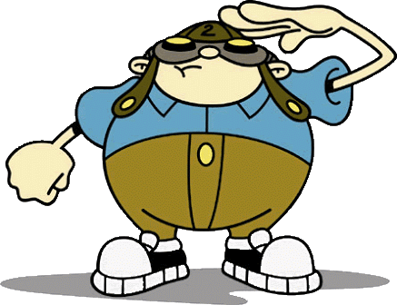

Nigel Uno nació en Inglaterra donde vivió los primeros años de su vida, a los 3 años se mudó a los Estados Unidos junto a sus padres, en el jardín de niños conocería a Hogarth Pennywhistle quien se convertiría en su mejor amigo, más tarde conocería a Abigail Lincoln quien le enseñaría sobre la existencia de los agentes KND. Ingresando al Código: KND, adoptaría el alias de Número 1, convirtiéndose en el líder del Sector V.
Hoagie P. Gilligan Jr también conocido como Número 2 es un gordito americano obsesionado con los juegos de palabras, grita en todas las oportunidades que ve, y un inventor y un piloto con una pasión por el vuelo. Él es el director de la tecnología 2x4 de Sector V.
Kuki Sanban también conocida como Número 3 es una despreocupada niña japonesa de 10 años de edad, la cual se encarga de las tácticas de distracción y es Médico Especialista del Sector V.
Wallabee "Wally" Beetles tambien conocido como numero 4 es impetuoso e impulsivo mano a mano de niño combatiente australiano de Los Chicos del Barrio del Sector V.
Abigail Lincoln también conocida como Número 5 es relajada, afroamericano/francés, segundo al mando de espionaje, es una de las 2 chicas en el Sector V.